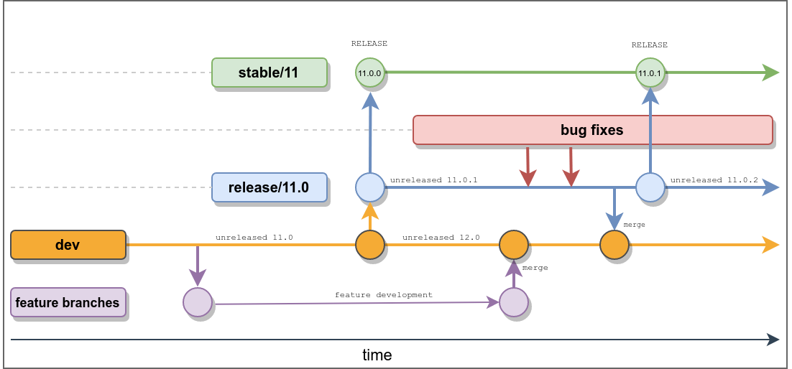

This guide will introduce you to how we at OpenProject develop OpenProject with Git, and how to contribute code. For other ways on how to contribute to OpenProject, please see the contribution guide.
The OpenProject core is developed fully at our GitHub repository at https://github.com/opf/openproject. In the course of this guide, we assume that you are familiar with Git. If you need a refresher on certain topics, we recommend the free Pro Git online book as a resource for all topics on Git.
OpenProject works with a git branching model similar to Git Flow to organize development and stable branches. The important branches are:
dev: Contains the current development version of OpenProject. Almost all development is made against this branch, with the exception of bugfixes and minor changesrelease/X.Y: Multiple of these branches may exist, they are maintenance branches or maintained or stale older releases of OpenProject. These branches will include bugfixes and changes for the next patch release of OpenProject.stable/X: Multiple of these branches exist containing the latest stable X.y.z release of OpenProject. These branches are used for building docker images and packages from and are usually never pushed to directly except during an automated release process.feature/X: These are temporary branches used by developers to develop features or other changes that are targeting the dev branch. They are opened as a pull request for reviewing and testing. When they are ready to merge, they will be merged into the dev branch.(bug)fix/X: These are temporary branches used by developers to provide bug fixes and regression tests. They can be created against dev on a new major or minor release during stabilization, but most often, you will want to create a bugfix against a current production release. In this case, open the pull request against the most recent release/X.Y branch so that the bugfix will be available in the immediate next patch release. Ensure that the version of the corresponding OpenProject bug ticket matches the release branch version.The following is an overview of the processes that happen during the release of a new major release and the bug fixing phase afterwards leading to patch releases being made.

The basic overview of how to contribute code to OpenProject is as follows.
For contributing source code, please follow the git workflow below:
git clone git@github.com/<username>/openproject
Make sure you’re on the right branch. The main development branch is dev:
git checkout dev
Add the original OpenProject repository as a remote, so you can fetch changes:
git remote add upstream git@github.com:opf/openproject
Update your local git branch to the core branch
git pull upstream/dev
Create a feature branch:
git checkout -b feature/<short description of your feature>
Make your changes, then push the branch into your own repository:
git push origin <your feature branch>
Create a pull request against a branch of of the <opf/openproject> repository, containing a clear description of what the pull request attempts to change and/or fix.
If your pull request does not contain a description for what it does and what it’s intentions are, we will reject it. If you are working on a specific work package from the list, please include a link to that work package in the description, so we can track your work.
The core contributor team will then review your pull request according to our code review guideline. Please note that you can add commits after the pull request has been created by pushing to the branch in your fork.
New features are always added to the current dev branch, which is the development version of the next major or minor OpenProject version.
Bugfixes for one of the actively supported versions of OpenProject should be issued against the respective branch. For that, we maintain at least one release/X.Y branch for OpenProject releases X.Y.Z. For example, the OpenProject release branch for 11.0 would be release/11.0 and contains all releases between 11.0.0 until 11.0.X .
A fix for the current version (called “Hotfix” and the branch ideally being named fix/XYZ) should target release/* and a fix for the former version (called “Backport” and the branch ideally being named backport/XYZ) should target backport/*. We will try to merge hotfixes into dev branch but if that is no trivial task, we might ask you to create another PR for that.